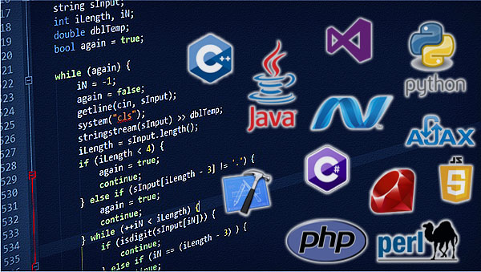

Un lenguaje de programación de alto nivel se caracteriza por expresar los algoritmos de una manera adecuada a la capacidad cognitiva humana, en lugar de la capacidad que se la ejecuta de las máquinas.

En los primeros lenguajes, la limitación era que se orientaban a un área específica y sus instrucciones requerían de una sintaxis predefinida. Se clasifican como lenguajes procedimentales o lenguajes de bajo nivel. Otra limitación de estos es que se requiere de ciertos conocimientos de programación para realizar las secuencias de instrucciones lógicas. Los lenguajes de alto nivel se crearon para que el usuario común pudiese solucionar un problema de procesamiento de datos de una manera más fácil y rápida.